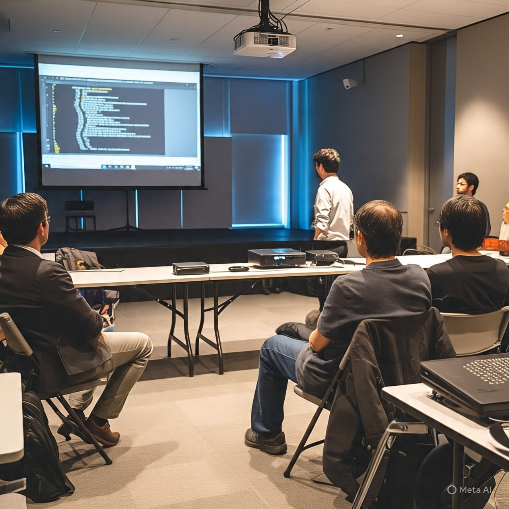
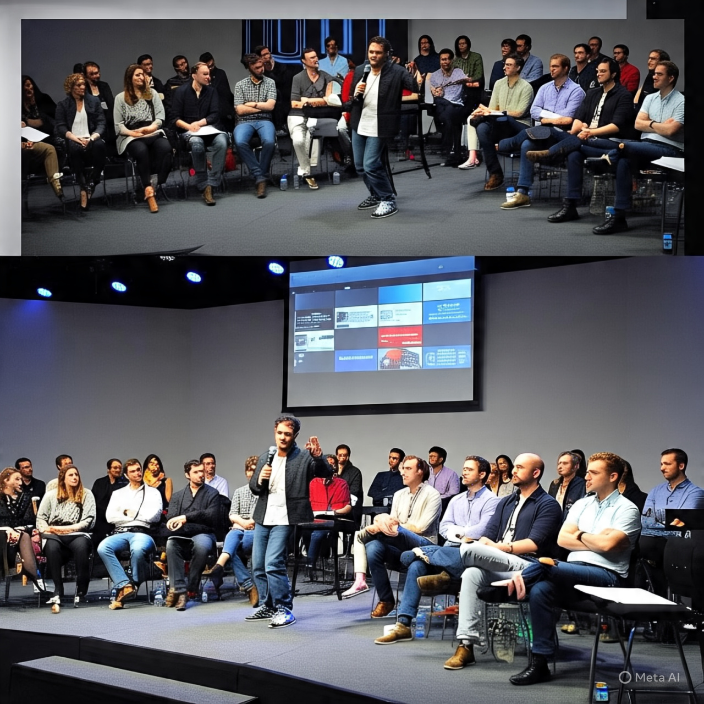
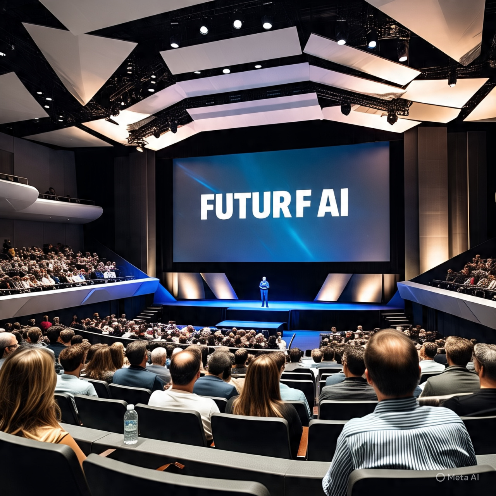
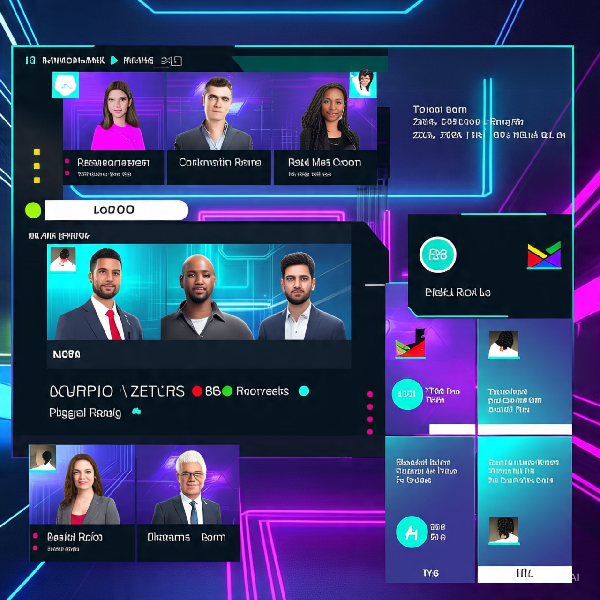
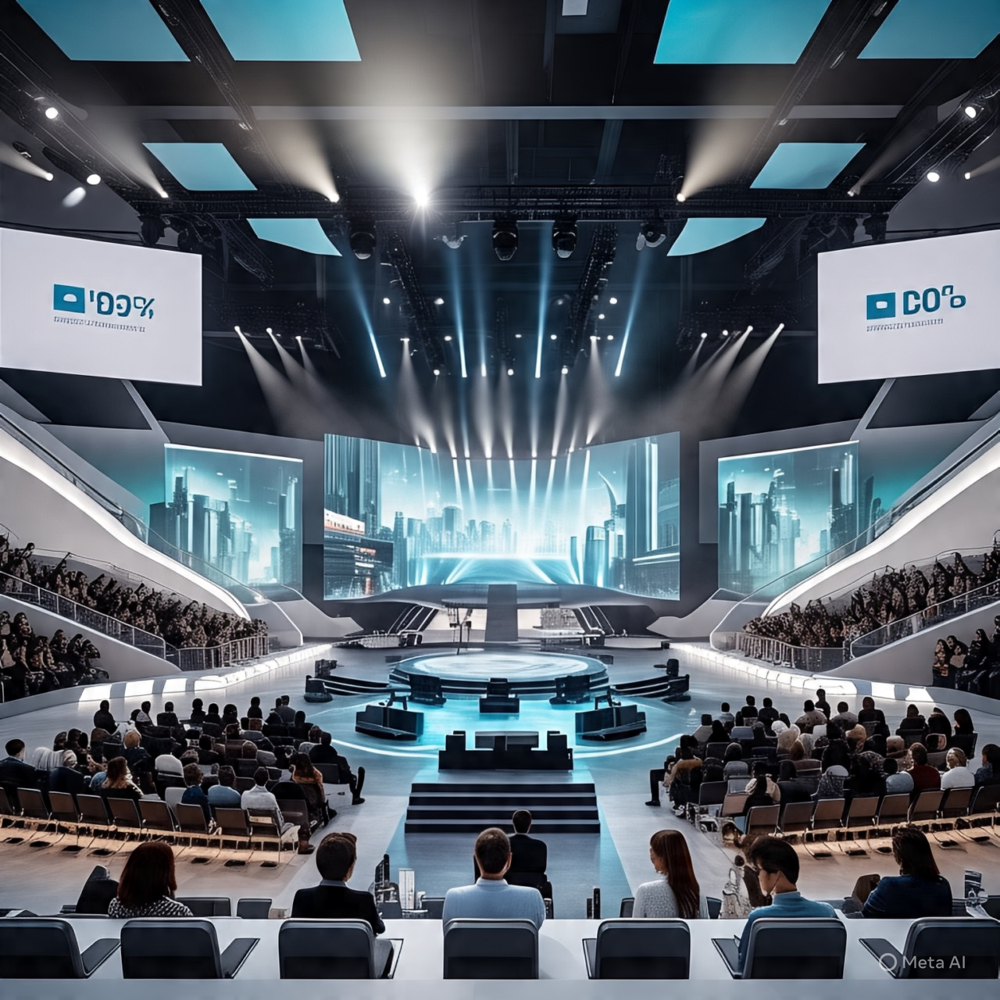

HISTORY:
The Rise of TechCon: Tracing the evolution of a Global Tech Phenomenom
1. TechCon didn't begin as the global powerhouse it is today. Its journey began in 2010 as a modest commuity meetup in San Jose California. Back then, it was simply a one-day event called "TechConnect", aimed at bringing together local developers and startups to exchange ideas.
2. The first few years saw steady grwoth, with the conference expanding to include panels on cloud computing, mobile develoopment and open source software. By 2015, Tech Con officially rebranded from "TechConnect" and relocated to larger venues, with over 2,000 attendees.
3. A major turning point came in 2018, when TechCon introduced its "Future of AI" track, drawing attention from global tech giants and innovators. This shift positioned TechCon as a serious platform for not just networking, but also product debuts and high-level research presentations.
4. During the pandemic in 2020, TechCon adapted swiftly to digital platforms, becoming one of the first major tech events to host a a fully virtual conference with immersive breakout sessions, VR networking lounges, and real-time code labs.
5. Now in 2025, TechCon draws over 50,000 attendees(both in-person and virtual), spamming five continents and featuring industry leaders in AI, cybersecurity, quantum computing, and sustainability tech. It's not just a conference, it's a celebration of where tech is and where it's heading.
